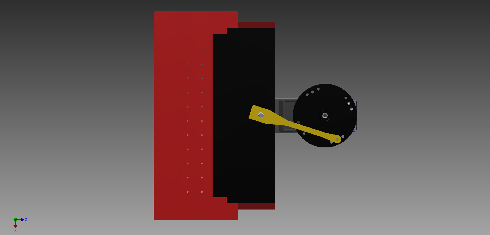

WaterTank
Droplet by droplet.

What function does it fulfill ?
As the Rambo Robot has to clean small tables as well as large tables, it needs to have a water tank large enough to provide the sponge with water during all the cleaning time. Therefore the customer just has to fill in the tank with water then while the robot is moving some water is spread on the table just in front of the sponge that is turning on itself.
How does it works?
It is basically a simple tank with 36 pierced holes on its bottom surface to let the water flow slowely to the ground. A system consisting in a crank rod is connected to a servo motor. It can block or let the water falls by putting a plate in front of the holes or not. This system is shown on the figure above.
PCB
A servo motor is drived by three wires.
The control wire is connected to a PWM digital output of the microcontroller. The servo motor can only turn from -90° to +90°, depending on the pulse width sent through the PWM, with 0°, the situation conresponding to the rest position.
Computer Aided Design Software
To build this project, we had to be able to design our robot on the computer. The aim of that is to know the exact dimensions of our pieces and notice before starting the construction that things would go wrong. The program we used was INVENTOR.
FabLab
When the design on computer was done, we had to build the robot. Few years ago, the robots could be made thanks to different techniques : turning, milling, drilling. Today, the technology evolved and we used for this project laser cutting to cut our plates of plexi and 3D printing for complex pieces. The machinery was available for us at the FabLab
Eagle
The PCB is an important part of the project. It enables to connect the microcontroller with ll the different parts of the project. The creation of it requires to be precise on the band width and the place of everything. To do it, we used a program, which gather a lot of electrical components to build those boards, called Eagle